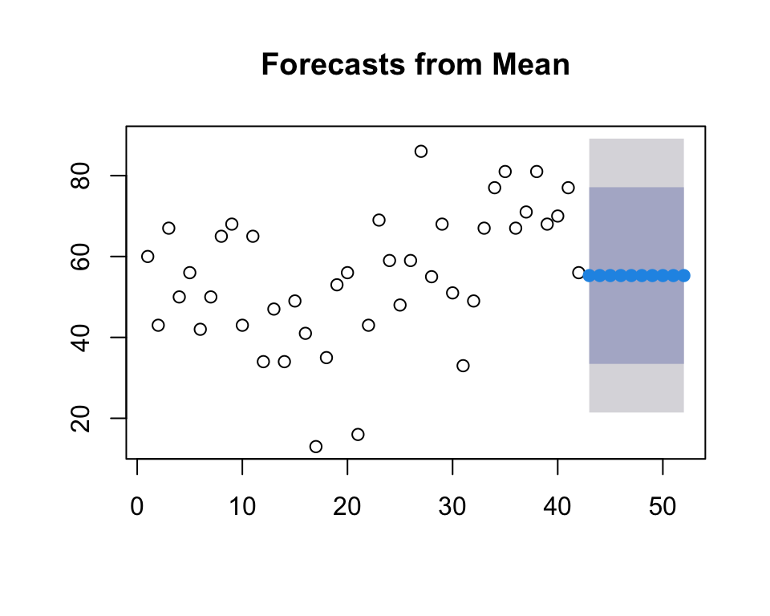
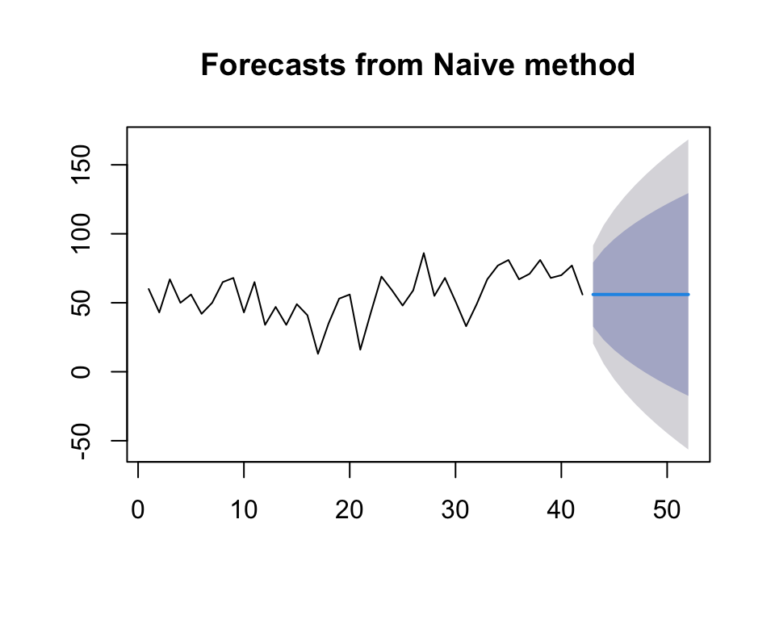
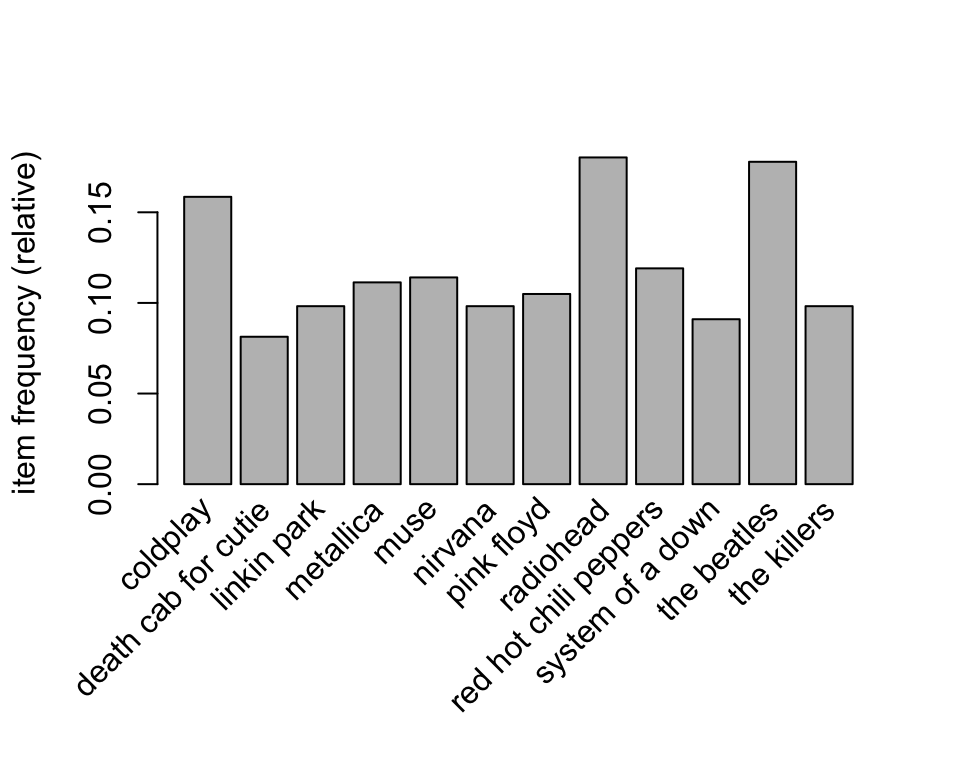

Capítulo 8 Reglas de Asociación
8.1 Introducción
- Aprendizaje no supervisado: técnica que permite un aprendizaje a partir de observaciones que permite extraer patrones, tendencias y realizar predicciones - sin entrenamiento.
- Entre los problemas más relevantes - predición de comportamiento de clientes, tendencias de compras: tiendas online, servicios online que ofrecen música, películas, etc.
- La realidad actual es que hay mucha competencia, muchos servicios similares, mercados online, etc.
- Objetivo: Atraer clientes es la clave.
- Medios: datos recolectados de los consumidores, de los usuarios de los servicios, características de los consumidores extraidas de los datos recolectados, patrones previos de compra o de uso, etc.
- Herramientas: Métodos de Ciencia de Datos - búsqueda de patrones frecuentes, reglas, etc.
Los métodos usados en esta área deben analizr los datos almacenados para diseñar sistemas recomendadores con los que:
- Ayudar a personalizar los servicios y la experiencia de compra, adivinar y sugerir tendencias de compra a partir de likes, dislikes.
- Controlar las horas punta de los servicios.
- Analizar combinaciones de productos que la gente suele comprar juntas.
- Analizar revisiones y precios que la competencia ofrece por los mismos productos
Los problemas en este área surgen del llamado Market Basket Analysis que se enfrenta a cómo realizar recomendaciones basadas en productos. Las soluciones para este problema pueden usarse en otros problemas similares: recomendaciones de intereses de las personas, etc.
Las técnicas más importantes son:
- Evaluación de la matriz de contingenica de los productos.
- Generación de itemsets frecuentes.
- Extracción de reglas de asociación.
8.1.1 Detectando y prediciendo tendencias
- Tendencia: patrón específico o comportamiento de compra-venta que aparece en un periodo de tiempo en una tienda.
- ¿Cómo detectar?: Almacenar todas las transacciones que se realicen en la tienda.
- items comprados
- stocks
- combinaciones de items comprados juntos
- transacción de cada venta realizada
- ¿Cómo tratar los datos?:
- pre-procesar
- normalizar
- agregar
- Aplicar algoritmos: localizar patrones y tendencias
- Recomendar: usar patrones y tendencias para sugerir nuevas compras.
El principal método para conseguir todo esto está basado en el problema denominado Market Basket Analysis. Estos métodos están fundamentados en estadística basado en probabilidad y nociones probabilísticas como: * soporte * confianza * lift, etc.
Objetivo: ¿Qué items (productos) se han comprado más frecuentemente?
8.2 Reglas de Asociación de transacciones
Explorando el dataset Adult
#install.packages(arules)
library(arules)
data("Adult")
length(Adult)[1] 48842
dim(Adult)[1] 48842 115
Adulttransactions in sparse format with 48842 transactions (rows) and 115 items (columns)
inspect(Adult[1:2])items transactionID[1] {age=Middle-aged,
workclass=State-gov,
education=Bachelors,
marital-status=Never-married,
occupation=Adm-clerical,
relationship=Not-in-family,
race=White,
sex=Male,
capital-gain=Low,
capital-loss=None,
hours-per-week=Full-time,
native-country=United-States,
income=small} 1
[2] {age=Senior,
workclass=Self-emp-not-inc,
education=Bachelors,
marital-status=Married-civ-spouse,
occupation=Exec-managerial,
relationship=Husband,
race=White,
sex=Male,
capital-gain=None,
capital-loss=None,
hours-per-week=Part-time,
native-country=United-States,
income=small} 2
Para calcular las reglas de asociación:
data("Adult")
rules <- apriori(Adult, parameter = list(supp = 0.5, conf = 0.9,
target = "rules")) Apriori
Parameter specification: confidence minval smax arem aval originalSupport maxtime support minlen 0.9 0.1 1 none FALSE TRUE 5 0.5 1 maxlen target ext 10 rules TRUE
Algorithmic control: filter tree heap memopt load sort verbose 0.1 TRUE TRUE FALSE TRUE 2 TRUE
Absolute minimum support count: 24421
set item appearances …[0 item(s)] done [0.00s]. set transactions …[115 item(s), 48842 transaction(s)] done [0.03s]. sorting and recoding items … [9 item(s)] done [0.00s]. creating transaction tree … done [0.01s]. checking subsets of size 1 2 3 4 done [0.00s]. writing … [52 rule(s)] done [0.00s]. creating S4 object … done [0.00s].
summary(rules) set of 52 rules
rule length distribution (lhs + rhs):sizes 1 2 3 4 2 13 24 13
Min. 1st Qu. Median Mean 3rd Qu. Max. 1.000 2.000 3.000 2.923 3.250 4.000
summary of quality measures:
support confidence coverage lift
Min. :0.5084 Min. :0.9031 Min. :0.5406 Min. :0.9844
1st Qu.:0.5415 1st Qu.:0.9155 1st Qu.:0.5875 1st Qu.:0.9937
Median :0.5974 Median :0.9229 Median :0.6293 Median :0.9997
Mean :0.6436 Mean :0.9308 Mean :0.6915 Mean :1.0036
3rd Qu.:0.7426 3rd Qu.:0.9494 3rd Qu.:0.7945 3rd Qu.:1.0057
Max. :0.9533 Max. :0.9583 Max. :1.0000 Max. :1.0586
count
Min. :24832
1st Qu.:26447
Median :29178
Mean :31433
3rd Qu.:36269
Max. :46560
mining info: data ntransactions support confidence Adult 48842 0.5 0.9 call apriori(data = Adult, parameter = list(supp = 0.5, conf = 0.9, target = “rules”))
inspect(head(rules))lhs rhs support confidence[1] {} => {capital-gain=None} 0.9173867 0.9173867 [2] {} => {capital-loss=None} 0.9532779 0.9532779 [3] {hours-per-week=Full-time} => {capital-gain=None} 0.5435895 0.9290688 [4] {hours-per-week=Full-time} => {capital-loss=None} 0.5606650 0.9582531 [5] {sex=Male} => {capital-gain=None} 0.6050735 0.9051455 [6] {sex=Male} => {capital-loss=None} 0.6331027 0.9470750 coverage lift count [1] 1.0000000 1.0000000 44807 [2] 1.0000000 1.0000000 46560 [3] 0.5850907 1.0127342 26550 [4] 0.5850907 1.0052191 27384 [5] 0.6684820 0.9866565 29553 [6] 0.6684820 0.9934931 30922
8.2.1 Parámetros de apriori
parameter: lista con las restricciones en el proceso de extracción
- supp o support
- conf o confidence
- minlen - máximo número de items en itemset
- maxlen - máximo número de items en itemset
- maxtime - límite de tiempo
- target - indicar qué tipo de asociaciones queremos extraer: “rules”, “frequent itemsets”, “maximally frequent itemsets”, “closed frequent itemsets”.
rules <- apriori(Adult, parameter = list(supp = 0.5, conf = 0.9,minlen=2)) Apriori
Parameter specification: confidence minval smax arem aval originalSupport maxtime support minlen 0.9 0.1 1 none FALSE TRUE 5 0.5 2 maxlen target ext 10 rules TRUE
Algorithmic control: filter tree heap memopt load sort verbose 0.1 TRUE TRUE FALSE TRUE 2 TRUE
Absolute minimum support count: 24421
set item appearances …[0 item(s)] done [0.00s]. set transactions …[115 item(s), 48842 transaction(s)] done [0.03s]. sorting and recoding items … [9 item(s)] done [0.00s]. creating transaction tree … done [0.01s]. checking subsets of size 1 2 3 4 done [0.00s]. writing … [50 rule(s)] done [0.00s]. creating S4 object … done [0.00s].
inspect(tail(rules))lhs rhs support confidence coverage lift count[1] {workclass=Private,
race=White,
capital-loss=None} => {capital-gain=None} 0.5204742 0.9171628 0.5674829 0.9997559 25421
[2] {workclass=Private,
capital-gain=None,
native-country=United-States} => {capital-loss=None} 0.5414807 0.9517075 0.5689570 0.9983526 26447
[3] {workclass=Private,
capital-loss=None,
native-country=United-States} => {capital-gain=None} 0.5414807 0.9182030 0.5897179 1.0008898 26447
[4] {race=White,
capital-gain=None,
native-country=United-States} => {capital-loss=None} 0.6803980 0.9457029 0.7194628 0.9920537 33232
[5] {race=White,
capital-loss=None,
native-country=United-States} => {capital-gain=None} 0.6803980 0.9083504 0.7490480 0.9901500 33232
[6] {race=White,
capital-gain=None,
capital-loss=None} => {native-country=United-States} 0.6803980 0.9189249 0.7404283 1.0239581 33232
patterns <- apriori(Adult, parameter = list(supp = 0.5, conf = 0.9,maxlen=10, target="frequent itemsets")) Apriori
Parameter specification: confidence minval smax arem aval originalSupport maxtime support minlen NA 0.1 1 none FALSE TRUE 5 0.5 1 maxlen target ext 10 frequent itemsets TRUE
Algorithmic control: filter tree heap memopt load sort verbose 0.1 TRUE TRUE FALSE TRUE 2 TRUE
Absolute minimum support count: 24421
set item appearances …[0 item(s)] done [0.00s]. set transactions …[115 item(s), 48842 transaction(s)] done [0.03s]. sorting and recoding items … [9 item(s)] done [0.00s]. creating transaction tree … done [0.01s]. checking subsets of size 1 2 3 4 done [0.00s]. sorting transactions … done [0.01s]. writing … [49 set(s)] done [0.00s]. creating S4 object … done [0.00s].
summary(patterns)set of 49 itemsets
most frequent items: capital-loss=None capital-gain=None 23 21 native-country=United-States race=White 21 19 workclass=Private (Other) 14 20
element (itemset/transaction) length distribution:sizes 1 2 3 4 9 17 17 6
Min. 1st Qu. Median Mean 3rd Qu. Max. 1.000 2.000 2.000 2.408 3.000 4.000
summary of quality measures:
support count
Min. :0.5051 Min. :24671
1st Qu.:0.5434 1st Qu.:26540
Median :0.5942 Median :29024
Mean :0.6449 Mean :31497
3rd Qu.:0.7404 3rd Qu.:36164
Max. :0.9533 Max. :46560
includes transaction ID lists: FALSE
mining info: data ntransactions support confidence Adult 48842 0.5 1 call apriori(data = Adult, parameter = list(supp = 0.5, conf = 0.9, maxlen = 10, target = “frequent itemsets”))
inspect(tail(patterns))items support count[1] {race=White,
sex=Male,
capital-loss=None,
native-country=United-States} 0.5113632 24976
[2] {sex=Male,
capital-gain=None,
capital-loss=None,
native-country=United-States} 0.5084149 24832
[3] {workclass=Private,
race=White,
capital-loss=None,
native-country=United-States} 0.5181401 25307
[4] {workclass=Private,
race=White,
capital-gain=None,
capital-loss=None} 0.5204742 25421
[5] {workclass=Private,
capital-gain=None,
capital-loss=None,
native-country=United-States} 0.5414807 26447
[6] {race=White,
capital-gain=None,
capital-loss=None,
native-country=United-States} 0.6803980 33232
appearance: especificar restricciones en la extracción de las asociaciones.
rules1 <- apriori(Adult,
parameter = list(supp = 0.5, conf = 0.9),
appearance = list(items = c("income=small", "sex=Male"))) Apriori
Parameter specification: confidence minval smax arem aval originalSupport maxtime support minlen 0.9 0.1 1 none FALSE TRUE 5 0.5 1 maxlen target ext 10 rules TRUE
Algorithmic control: filter tree heap memopt load sort verbose 0.1 TRUE TRUE FALSE TRUE 2 TRUE
Absolute minimum support count: 24421
set item appearances …[2 item(s)] done [0.00s]. set transactions …[2 item(s), 48842 transaction(s)] done [0.02s]. sorting and recoding items … [2 item(s)] done [0.00s]. creating transaction tree … done [0.01s]. checking subsets of size 1 2 done [0.00s]. writing … [0 rule(s)] done [0.00s]. creating S4 object … done [0.00s].
inspect(head(rules1))
rules2 <- apriori(Adult,
parameter = list(supp = 0.5, conf = 0.9),
appearance = list(none = c("income=small", "sex=Male"))) Apriori
Parameter specification: confidence minval smax arem aval originalSupport maxtime support minlen 0.9 0.1 1 none FALSE TRUE 5 0.5 1 maxlen target ext 10 rules TRUE
Algorithmic control: filter tree heap memopt load sort verbose 0.1 TRUE TRUE FALSE TRUE 2 TRUE
Absolute minimum support count: 24421
set item appearances …[2 item(s)] done [0.00s]. set transactions …[115 item(s), 48842 transaction(s)] done [0.03s]. sorting and recoding items … [7 item(s)] done [0.00s]. creating transaction tree … done [0.01s]. checking subsets of size 1 2 3 4 done [0.00s]. writing … [39 rule(s)] done [0.00s]. creating S4 object … done [0.00s].
inspect(head(rules2)) lhs rhs support confidence[1] {} => {capital-gain=None} 0.9173867 0.9173867 [2] {} => {capital-loss=None} 0.9532779 0.9532779 [3] {hours-per-week=Full-time} => {capital-gain=None} 0.5435895 0.9290688 [4] {hours-per-week=Full-time} => {capital-loss=None} 0.5606650 0.9582531 [5] {workclass=Private} => {capital-gain=None} 0.6413742 0.9239073 [6] {workclass=Private} => {capital-loss=None} 0.6639982 0.9564974 coverage lift count [1] 1.0000000 1.000000 44807 [2] 1.0000000 1.000000 46560 [3] 0.5850907 1.012734 26550 [4] 0.5850907 1.005219 27384 [5] 0.6941976 1.007108 31326 [6] 0.6941976 1.003377 32431
8.3 Reglas de Asociación - preprocesamiento
Explorando el dataset AdultUCI
Contiene los datos del dataset que originalmente se llamó ‘Census Income’ Database en formato data.frame.
El dataset Adult del apartado anterior tiene los datos preparados para el cómputo de las reglas. El tipo de datos de este dataset es transactions que es adecuado para el paquete arules.
El dataset AdultUCI:
library(arules)
data("AdultUCI")
#View(AdultUCI)
str(AdultUCI)‘data.frame’: 48842 obs. of 15 variables: $ age : int 39 50 38 53 28 37 49 52 31 42 … $ workclass : Factor w/ 8 levels “Federal-gov”,..: 7 6 4 4 4 4 4 6 4 4 … $ fnlwgt : int 77516 83311 215646 234721 338409 284582 160187 209642 45781 159449 … $ education : Ord.factor w/ 16 levels “Preschool”<“1st-4th”<..: 14 14 9 7 14 15 5 9 15 14 … $ education-num : int 13 13 9 7 13 14 5 9 14 13 … $ marital-status: Factor w/ 7 levels “Divorced”,“Married-AF-spouse”,..: 5 3 1 3 3 3 4 3 5 3 … $ occupation : Factor w/ 14 levels “Adm-clerical”,..: 1 4 6 6 10 4 8 4 10 4 … $ relationship : Factor w/ 6 levels “Husband”,“Not-in-family”,..: 2 1 2 1 6 6 2 1 2 1 … $ race : Factor w/ 5 levels “Amer-Indian-Eskimo”,..: 5 5 5 3 3 5 3 5 5 5 … $ sex : Factor w/ 2 levels “Female”,“Male”: 2 2 2 2 1 1 1 2 1 2 … $ capital-gain : int 2174 0 0 0 0 0 0 0 14084 5178 … $ capital-loss : int 0 0 0 0 0 0 0 0 0 0 … $ hours-per-week: int 40 13 40 40 40 40 16 45 50 40 … $ native-country: Factor w/ 41 levels “Cambodia”,“Canada”,..: 39 39 39 39 5 39 23 39 39 39 … $ income : Ord.factor w/ 2 levels “small”<“large”: 1 1 1 1 1 1 1 2 2 2 …
En la mayoría de los datasets es necesario un primer paso de preprocesamiento.
A continuación aplicaremos el preprocesamiento a AdultUCI hasta convertirlo en transacciones que arules maneja adecuadamente.
8.3.1 Discretización de items
Borrar algunas columnas que no son interesantes: {}
AdultUCI$fnlwgt <-NULL
## o AdultUCI[["fnlwgt"]] <- NULL
AdultUCI$`education-num` <- NULL Convertir a discretos valores numéricos: age, hours-per-week, capital-gain, capital-loss}.
Usaremos comandos {} para hacerlo. A continuación un ejemplo de cómo funcionan estos dos comandos:
# ejemplo de funcionamiento de cut y ordered
v <- 1:100
v2 <- cut(v,c(0,25,50,75,100),labels=c("bajo","medio","alto","muyalto"))
v3 <- ordered(v2)Aplicamos estas funciones a AdultUCI:
AdultUCI$age <- ordered(cut(AdultUCI[[ "age"]], c(15,25,45,65,100)),
labels = c("Young", "Middle-aged", "Senior", "Old"))
AdultUCI[[ "hours-per-week"]] <- ordered(cut(AdultUCI[[ "hours-per-week"]],
c(0,25,40,60,168)),
labels = c("Part-time", "Full-time", "Over-time", "Workaholic"))
AdultUCI[[ "capital-gain"]] <- ordered(cut(AdultUCI[[ "capital-gain"]],
c(-Inf,0,median(AdultUCI[[ "capital-gain"]][AdultUCI[[ "capital-gain"]]>0]),
Inf)), labels = c("None", "Low", "High"))
AdultUCI[[ "capital-loss"]] <- ordered(cut(AdultUCI[[ "capital-loss"]],
c(-Inf,0, median(AdultUCI[[ "capital-loss"]][AdultUCI[[ "capital-loss"]]>0]),
Inf)), labels = c("None", "Low", "High"))Llamamos a apriori:
reg <- apriori(AdultUCI)Apriori
Parameter specification: confidence minval smax arem aval originalSupport maxtime support minlen 0.8 0.1 1 none FALSE TRUE 5 0.1 1 maxlen target ext 10 rules TRUE
Algorithmic control: filter tree heap memopt load sort verbose 0.1 TRUE TRUE FALSE TRUE 2 TRUE
Absolute minimum support count: 4884
set item appearances …[0 item(s)] done [0.00s]. set transactions …[115 item(s), 48842 transaction(s)] done [0.03s]. sorting and recoding items … [31 item(s)] done [0.00s]. creating transaction tree … done [0.02s]. checking subsets of size 1 2 3 4 5 6 7 8 9 done [0.07s]. writing … [6137 rule(s)] done [0.00s]. creating S4 object … done [0.00s].
inspect(head(reg))lhs rhs support [1] {} => {race=White} 0.8550428 [2] {} => {native-country=United-States} 0.8974243 [3] {} => {capital-gain=None} 0.9173867 [4] {} => {capital-loss=None} 0.9532779 [5] {relationship=Unmarried} => {capital-loss=None} 0.1019819 [6] {occupation=Sales} => {race=White} 0.1005282 confidence coverage lift count [1] 0.8550428 1.0000000 1.000000 41762 [2] 0.8974243 1.0000000 1.000000 43832 [3] 0.9173867 1.0000000 1.000000 44807 [4] 0.9532779 1.0000000 1.000000 46560 [5] 0.9719024 0.1049302 1.019537 4981 [6] 0.8920785 0.1126899 1.043314 4910
8.3.2 Tipo de dato transactions
Ver https://www.r-bloggers.com/data-frames-and-transactions/}
Comparamos AdultUCI que hemos procesado con Adult.
Adult1 <- as(AdultUCI, "transactions")
class(Adult1)[1] “transactions” attr(,“package”) [1] “arules”
length(Adult1)[1] 48842
dim(Adult1)[1] 48842 115
Adult1transactions in sparse format with 48842 transactions (rows) and 115 items (columns)
inspect(Adult1[1:2])items transactionID[1] {age=Middle-aged,
workclass=State-gov,
education=Bachelors,
marital-status=Never-married,
occupation=Adm-clerical,
relationship=Not-in-family,
race=White,
sex=Male,
capital-gain=Low,
capital-loss=None,
hours-per-week=Full-time,
native-country=United-States,
income=small} 1
[2] {age=Senior,
workclass=Self-emp-not-inc,
education=Bachelors,
marital-status=Married-civ-spouse,
occupation=Exec-managerial,
relationship=Husband,
race=White,
sex=Male,
capital-gain=None,
capital-loss=None,
hours-per-week=Part-time,
native-country=United-States,
income=small} 2
data("Adult")
class(Adult)[1] “transactions” attr(,“package”) [1] “arules”
length(Adult)[1] 48842
dim(Adult)[1] 48842 115
Adulttransactions in sparse format with 48842 transactions (rows) and 115 items (columns)
inspect(Adult[1:2])items transactionID[1] {age=Middle-aged,
workclass=State-gov,
education=Bachelors,
marital-status=Never-married,
occupation=Adm-clerical,
relationship=Not-in-family,
race=White,
sex=Male,
capital-gain=Low,
capital-loss=None,
hours-per-week=Full-time,
native-country=United-States,
income=small} 1
[2] {age=Senior,
workclass=Self-emp-not-inc,
education=Bachelors,
marital-status=Married-civ-spouse,
occupation=Exec-managerial,
relationship=Husband,
race=White,
sex=Male,
capital-gain=None,
capital-loss=None,
hours-per-week=Part-time,
native-country=United-States,
income=small} 2
8.3.3 Métodos de arules
- summary(): Visión del conjunto de reglas.
- length(): Número de reglas.
- items(): Elementos involucrados.
- sort(): Ordenar.
- subset(): Elementos involucrados. (see help(subset). Seleccionar reglas que cumplan ciertos criterios.
- union(), intersect(), setequal(), match() (usar ayuda help(xxx) ).
- write(): Escribir reglas con formato más adequado.
data("Adult")
r1 <- apriori(Adult[1:1000], parameter = list(support = 0.5))
r2 <- apriori(Adult[1001:2000], parameter = list(support = 0.5))
#Convertir en un dataframe
dfr1 <-DATAFRAME(r1)
r_comb <- c(r1, r2)
duplicated(r_comb)
intersect(r1,r2)
union(r1,r2)
lhs(reglas1)
rhs(reglas1)
class(lhs(reglas1))8.4 Ejercicio en Laboratorio
Utilizar con el dataset Adult los métodos y operaciones vistos en el presente documento.
8.5 arulesViz
Vamos a usar el dataset Groceries para ver los comandos de visualización de reglas de asociación más interesantes.
Extraemos las reglas: Apriori
Parameter specification: confidence minval smax arem aval originalSupport maxtime support minlen 0.5 0.1 1 none FALSE TRUE 5 0.001 1 maxlen target ext 10 rules TRUE
Algorithmic control: filter tree heap memopt load sort verbose 0.1 TRUE TRUE FALSE TRUE 2 TRUE
Absolute minimum support count: 9
set item appearances …[0 item(s)] done [0.00s].
set transactions …[169 item(s), 9835 transaction(s)] done [0.00s].
sorting and recoding items … [157 item(s)] done [0.00s].
creating transaction tree … done [0.00s].
checking subsets of size 1 2 3 4 5 6 done [0.01s].
writing … [5668 rule(s)] done [0.00s].
creating S4 object … done [0.00s].
set of 5668 rules
lhs rhs support confidence coverage
[1] {honey} => {whole milk} 0.001118454 0.7333333 0.001525165
[2] {tidbits} => {rolls/buns} 0.001220132 0.5217391 0.002338587
[3] {cocoa drinks} => {whole milk} 0.001321810 0.5909091 0.002236909
[4] {pudding powder} => {whole milk} 0.001321810 0.5652174 0.002338587
[5] {cooking chocolate} => {whole milk} 0.001321810 0.5200000 0.002541942
[6] {cereals} => {whole milk} 0.003660397 0.6428571 0.005693950
lift count
[1] 2.870009 11
[2] 2.836542 12
[3] 2.312611 13
[4] 2.212062 13
[5] 2.035097 13
[6] 2.515917 36
El comando básico de visualización de reglas es plot. Mostramos distintas opciones de uso de plot (colores).


Opción de visualización interactiva:
Representación matricial de las reglas:
set of 52 rules
Itemsets in Antecedent (LHS)
[1] “{Instant food products,soda}”
[2] “{soda,popcorn}”
[3] “{flour,baking powder}”
[4] “{ham,processed cheese}”
[5] “{whole milk,Instant food products}”
[6] “{other vegetables,curd,yogurt,whipped/sour cream}”
[7] “{processed cheese,domestic eggs}”
[8] “{tropical fruit,other vegetables,yogurt,white bread}”
[9] “{hamburger meat,yogurt,whipped/sour cream}”
[10] “{tropical fruit,other vegetables,whole milk,yogurt,domestic eggs}”
[11] “{liquor,red/blush wine}”
[12] “{other vegetables,yogurt,whipped/sour cream,cream cheese }”
[13] “{yogurt,whipped/sour cream,hard cheese}”
[14] “{tropical fruit,root vegetables,other vegetables,whole milk,rolls/buns}”
[15] “{tropical fruit,whole milk,yogurt,sliced cheese}”
[16] “{other vegetables,butter,sugar}”
[17] “{whole milk,whipped/sour cream,hard cheese}”
[18] “{other vegetables,hard cheese,domestic eggs}”
[19] “{tropical fruit,other vegetables,whipped/sour cream,fruit/vegetable juice}”
[20] “{tropical fruit,onions,yogurt}”
[21] “{tropical fruit,other vegetables,yogurt,domestic eggs}”
[22] “{butter,yogurt,pastry}”
[23] “{whole milk,butter,hard cheese}”
[24] “{tropical fruit,other vegetables,butter,fruit/vegetable juice}”
[25] “{whole milk,curd,yogurt,cream cheese }”
[26] “{tropical fruit,other vegetables,hard cheese}”
[27] “{other vegetables,whole milk,whipped/sour cream,napkins}”
[28] “{citrus fruit,whole milk,cream cheese }”
[29] “{tropical fruit,other vegetables,frozen fish}”
[30] “{butter,yogurt,hard cheese}”
[31] “{curd,yogurt,sugar}”
[32] “{other vegetables,whole milk,butter,soda}”
[33] “{whole milk,cream cheese ,sugar}”
[34] “{frozen vegetables,specialty chocolate}”
[35] “{citrus fruit,other vegetables,whole milk,cream cheese }”
[36] “{tropical fruit,whipped/sour cream,shopping bags}”
[37] “{citrus fruit,tropical fruit,grapes}”
[38] “{other vegetables,butter,hard cheese}”
[39] “{whole milk,butter,sliced cheese}”
[40] “{citrus fruit,other vegetables,soda,fruit/vegetable juice}”
[41] “{tropical fruit,other vegetables,whole milk,yogurt,oil}”
[42] “{tropical fruit,grapes,fruit/vegetable juice}”
[43] “{frankfurter,tropical fruit,domestic eggs}”
[44] “{tropical fruit,whole milk,yogurt,frozen meals}”
[45] “{other vegetables,curd,yogurt,cream cheese }”
[46] “{root vegetables,whole milk,flour}”
[47] “{citrus fruit,whole milk,sugar}”
[48] “{tropical fruit,other vegetables,misc. beverages}”
[49] “{ham,tropical fruit,other vegetables}”
[50] “{citrus fruit,grapes,fruit/vegetable juice}”
[51] “{whole milk,whipped/sour cream,rolls/buns,pastry}”
Itemsets in Consequent (RHS)
[1] “{tropical fruit}” “{citrus fruit}”
[3] “{root vegetables}” “{pip fruit}”
[5] “{fruit/vegetable juice}” “{domestic eggs}”
[7] “{whipped/sour cream}” “{butter}”
[9] “{curd}” “{beef}”
[11] “{bottled beer}” “{white bread}”
[13] “{cream cheese }” “{sugar}”
[15] “{salty snack}” “{hamburger meat}”

E interactiva:
Representación matricial mostrando los items:
Representación mediante grafos de las reglas (solo para conjuntos pequeños de reglas):
Available control parameters (with default values):
layout = stress
circular = FALSE
ggraphdots = NULL
edges =
El paquete Graphviz permite una mejor visualización:

Permite visualización dinámica:
8.6 Construyendo un sistema recomendador
El dataset lastfm.csv del CV incluye las transacciones recogidas en una radio online que almacena el identificador del usuario, artista, sexo del usuario y el país.
Objetivo: Construir un sistema de recomendación de grupos de música a los usuarios a partir de dataset anterior.
library(arules)
lastfm <- read.csv("data/lastfm.csv")
lastfm[1:20,]user artist sex country 1 1 red hot chili peppers f Germany 2 1 the black dahlia murder f Germany 3 1 goldfrapp f Germany 4 1 dropkick murphys f Germany 5 1 le tigre f Germany 6 1 schandmaul f Germany 7 1 edguy f Germany 8 1 jack johnson f Germany 9 1 eluveitie f Germany 10 1 the killers f Germany 11 1 judas priest f Germany 12 1 rob zombie f Germany 13 1 john mayer f Germany 14 1 the who f Germany 15 1 guano apes f Germany 16 1 the rolling stones f Germany 17 3 devendra banhart m United States 18 3 boards of canada m United States 19 3 cocorosie m United States 20 3 aphex twin m United States
length(lastfm$user) ## 289,955 filas[1] 289955
class(lastfm$user)[1] “integer”
# Necesitamos convertir este atributo a factor
#para poder analizarlo con paquete {\tt arules}
lastfm$user <- factor(lastfm$user)
# Ejecuta en tu ordenador
# levels(lastfm$user) ## 15,000 users
# levels(lastfm$artist) ## 1,004 artistsLlamamos a apriori:
reglas1 <- apriori(lastfm,parameter=list(support=.01, confidence=.5))Apriori
Parameter specification: confidence minval smax arem aval originalSupport maxtime support minlen 0.5 0.1 1 none FALSE TRUE 5 0.01 1 maxlen target ext 10 rules TRUE
Algorithmic control: filter tree heap memopt load sort verbose 0.1 TRUE TRUE FALSE TRUE 2 TRUE
Absolute minimum support count: 2899
set item appearances …[0 item(s)] done [0.00s]. set transactions …[16165 item(s), 289955 transaction(s)] done [0.26s]. sorting and recoding items … [21 item(s)] done [0.00s]. creating transaction tree … done [0.06s]. checking subsets of size 1 2 done [0.00s]. writing … [19 rule(s)] done [0.00s]. creating S4 object … done [0.01s].
inspect(reglas1) lhs rhs support confidence coverage [1] {} => {sex=m} 0.73053750 0.7305375 1.00000000 [2] {country=Czech Republic} => {sex=m} 0.01039472 0.8033049 0.01293994 [3] {country=Mexico} => {sex=m} 0.01023607 0.7804365 0.01311583 [4] {country=Norway} => {sex=m} 0.01239503 0.7744021 0.01600593 [5] {country=Turkey} => {sex=m} 0.01088445 0.6627467 0.01642324 [6] {country=Italy} => {sex=m} 0.01501612 0.7615882 0.01971685 [7] {country=France} => {sex=m} 0.01707161 0.8302583 0.02056181 [8] {country=Australia} => {sex=m} 0.01497474 0.6776963 0.02209653 [9] {country=Canada} => {sex=m} 0.01568174 0.6563222 0.02389336 [10] {country=Spain} => {sex=m} 0.02482109 0.7720446 0.03214982 [11] {country=Netherlands} => {sex=m} 0.02690417 0.8064716 0.03336035 [12] {country=Finland} => {sex=m} 0.02661103 0.7596731 0.03502957 [13] {country=Russian Federation} => {sex=m} 0.03062544 0.7605344 0.04026832 [14] {country=Brazil} => {sex=m} 0.03001845 0.7300788 0.04111673 [15] {country=Sweden} => {sex=m} 0.03193254 0.7479603 0.04269283 [16] {country=Poland} => {sex=m} 0.03854391 0.6531471 0.05901261 [17] {country=Germany} => {sex=m} 0.06069907 0.7257433 0.08363712 [18] {country=United Kingdom} => {sex=m} 0.07730510 0.8110211 0.09531824 [19] {country=United States} => {sex=m} 0.13852839 0.6744182 0.20540429 lift count [1] 1.0000000 211823 [2] 1.0996080 3014 [3] 1.0683045 2968 [4] 1.0600442 3594 [5] 0.9072043 3156 [6] 1.0425040 4354 [7] 1.1365033 4950 [8] 0.9276680 4342 [9] 0.8984100 4547 [10] 1.0568172 7197 [11] 1.1039428 7801 [12] 1.0398825 7716 [13] 1.0410615 8880 [14] 0.9993722 8704 [15] 1.0238492 9259 [16] 0.8940638 11176 [17] 0.9934374 17600 [18] 1.1101703 22415 [19] 0.9231808 40167
Comentario: En versiones anteriores de arules el anterior comando daba error. Teníamos que convertir a factor las variables discretas. Es un paquete vivo que va evolucionando día a día.
¿Cual es la recomendación que podemos obtener con estas reglas?
No es el tipo de reglas que queremos obtener para nuestro sistema de recomendación.
Los datos deben ser manipulados para poder encontrar lo que nos interesa. Usaremos los Comandos: split, lapply.
Primero me quedo con una lista de lo que escucha cada usuario:
lista.musica.por.usuario <- split(x=lastfm[,"artist"],f=lastfm$user)
lista.musica.por.usuario[1:2]$1
[1] “red hot chili peppers” “the black dahlia murder”
[3] “goldfrapp” “dropkick murphys”
[5] “le tigre” “schandmaul”
[7] “edguy” “jack johnson”
[9] “eluveitie” “the killers”
[11] “judas priest” “rob zombie”
[13] “john mayer” “the who”
[15] “guano apes” “the rolling stones”
$3
[1] “devendra banhart” “boards of canada” “cocorosie”
[4] “aphex twin” “animal collective” “atmosphere”
[7] “joanna newsom” “air” “portishead”
[10] “massive attack” “broken social scene” “arcade fire”
[13] “plaid” “prefuse 73” “m83”
[16] “the flashbulb” “pavement” “goldfrapp”
[19] “amon tobin” “sage francis” “four tet”
[22] “max richter” “autechre” “radiohead”
[25] “neutral milk hotel” “beastie boys” “aesop rock”
[28] “mf doom” “the books”
A continuación:
- Un grupo/cantante podría estar dos veces en un usuario: eliminar repeticiones
- Convertir a formato transacciones
- Mirar la música escuchada por los primeros usuarios
## Eliminar duplicados
lista.musica.por.usuario <- lapply(lista.musica.por.usuario,unique)
# Convertimos en transacciones la lista de música.
lista.musica.por.usuario1 <- as(lista.musica.por.usuario,"transactions")
lista.musica.por.usuario[1:5]$1
[1] “red hot chili peppers” “the black dahlia murder”
[3] “goldfrapp” “dropkick murphys”
[5] “le tigre” “schandmaul”
[7] “edguy” “jack johnson”
[9] “eluveitie” “the killers”
[11] “judas priest” “rob zombie”
[13] “john mayer” “the who”
[15] “guano apes” “the rolling stones”
$3
[1] “devendra banhart” “boards of canada” “cocorosie”
[4] “aphex twin” “animal collective” “atmosphere”
[7] “joanna newsom” “air” “portishead”
[10] “massive attack” “broken social scene” “arcade fire”
[13] “plaid” “prefuse 73” “m83”
[16] “the flashbulb” “pavement” “goldfrapp”
[19] “amon tobin” “sage francis” “four tet”
[22] “max richter” “autechre” “radiohead”
[25] “neutral milk hotel” “beastie boys” “aesop rock”
[28] “mf doom” “the books”
$4
[1] “tv on the radio” “tool”
[3] “kyuss” “dj shadow”
[5] “air” “a tribe called quest”
[7] “the cinematic orchestra” “beck”
[9] “bon iver” “röyksopp”
[11] “bonobo” “the decemberists”
[13] “snow patrol” “battles”
[15] “the prodigy” “pink floyd”
[17] “rjd2” “the flaming lips”
[19] “michael jackson” “mgmt”
[21] “the rolling stones” “late of the pier”
[23] “flight of the conchords” “simian mobile disco”
[25] “muse” “fleetwood mac”
[27] “led zeppelin”
$5
[1] “dream theater” “ac/dc”
[3] “metallica” “iron maiden”
[5] “bob marley & the wailers” “megadeth”
[7] “children of bodom” “trivium”
[9] “nightwish” “sublime”
[11] “volbeat”
$6
[1] “lily allen” “kanye west” “sigur rós”
[4] “pink floyd” “stevie wonder” “metallica”
[7] “thievery corporation” “iron maiden” “the streets”
[10] “muse” “faith no more” “manu chao”
[13] “tenacious d” “depeche mode” “justin timberlake”
[16] “green day” “snow patrol” “dream theater”
[19] “u2” “jay-z” “type o negative”
[22] “pearl jam” “queen”
# en la versión actual de R esto va bien
#error ¿? (en versiones anteriores de R daba error, si os pasa intentar siguientes comandos)
#lista.musica.por.usuario2 <- as(lapply(lista.musica.por.usuario, "[[", 1), "transactions")
#lista.musica.por.usuario2Visualizamos lo que hemos conseguido hasta el momento:
str(lista.musica.por.usuario1)Formal class ‘transactions’ [package “arules”] with 3 slots ..@ data :Formal class ‘ngCMatrix’ [package “Matrix”] with 5 slots .. .. ..@ i : int [1:289953] 280 288 299 373 383 429 457 468 512 714 … .. .. ..@ p : int [1:15001] 0 16 45 72 83 106 128 147 177 184 … .. .. ..@ Dim : int [1:2] 1004 15000 .. .. ..@ Dimnames:List of 2 .. .. .. ..$ : NULL .. .. .. ..$ : NULL .. .. ..@ factors : list() ..@ itemInfo :‘data.frame’: 1004 obs. of 1 variable: .. ..$ labels: chr [1:1004] “…and you will know us by the trail of dead” “[unknown]” “2pac” “3 doors down” … ..@ itemsetInfo:‘data.frame’: 15000 obs. of 1 variable: .. ..$ transactionID: chr [1:15000] “1” “3” “4” “5” …
write(head(lista.musica.por.usuario1))“dropkick murphys” “edguy” “eluveitie” “goldfrapp” “guano apes” “jack johnson” “john mayer” “judas priest” “le tigre” “red hot chili peppers” “rob zombie” “schandmaul” “the black dahlia murder” “the killers” “the rolling stones” “the who” “aesop rock” “air” “amon tobin” “animal collective” “aphex twin” “arcade fire” “atmosphere” “autechre” “beastie boys” “boards of canada” “broken social scene” “cocorosie” “devendra banhart” “four tet” “goldfrapp” “joanna newsom” “m83” “massive attack” “max richter” “mf doom” “neutral milk hotel” “pavement” “plaid” “portishead” “prefuse 73” “radiohead” “sage francis” “the books” “the flashbulb” “a tribe called quest” “air” “battles” “beck” “bon iver” “bonobo” “dj shadow” “fleetwood mac” “flight of the conchords” “kyuss” “late of the pier” “led zeppelin” “mgmt” “michael jackson” “muse” “pink floyd” “rjd2” “röyksopp” “simian mobile disco” “snow patrol” “the cinematic orchestra” “the decemberists” “the flaming lips” “the prodigy” “the rolling stones” “tool” “tv on the radio” “ac/dc” “bob marley & the wailers” “children of bodom” “dream theater” “iron maiden” “megadeth” “metallica” “nightwish” “sublime” “trivium” “volbeat” “depeche mode” “dream theater” “faith no more” “green day” “iron maiden” “jay-z” “justin timberlake” “kanye west” “lily allen” “manu chao” “metallica” “muse” “pearl jam” “pink floyd” “queen” “sigur rós” “snow patrol” “stevie wonder” “tenacious d” “the streets” “thievery corporation” “type o negative” “u2” “ac/dc” “aerosmith” “alice in chains” “audioslave” “buckethead” “camel” “disturbed” “dream theater” “jethro tull” “king crimson” “led zeppelin” “oasis” “pearl jam” “pink floyd” “porcupine tree” “rammstein” “rush” “soundgarden” “stone temple pilots” “the verve” “tool” “type o negative”
write(head(lista.musica.por.usuario1),format="single")“1” “dropkick murphys” “1” “edguy” “1” “eluveitie” “1” “goldfrapp” “1” “guano apes” “1” “jack johnson” “1” “john mayer” “1” “judas priest” “1” “le tigre” “1” “red hot chili peppers” “1” “rob zombie” “1” “schandmaul” “1” “the black dahlia murder” “1” “the killers” “1” “the rolling stones” “1” “the who” “3” “aesop rock” “3” “air” “3” “amon tobin” “3” “animal collective” “3” “aphex twin” “3” “arcade fire” “3” “atmosphere” “3” “autechre” “3” “beastie boys” “3” “boards of canada” “3” “broken social scene” “3” “cocorosie” “3” “devendra banhart” “3” “four tet” “3” “goldfrapp” “3” “joanna newsom” “3” “m83” “3” “massive attack” “3” “max richter” “3” “mf doom” “3” “neutral milk hotel” “3” “pavement” “3” “plaid” “3” “portishead” “3” “prefuse 73” “3” “radiohead” “3” “sage francis” “3” “the books” “3” “the flashbulb” “4” “a tribe called quest” “4” “air” “4” “battles” “4” “beck” “4” “bon iver” “4” “bonobo” “4” “dj shadow” “4” “fleetwood mac” “4” “flight of the conchords” “4” “kyuss” “4” “late of the pier” “4” “led zeppelin” “4” “mgmt” “4” “michael jackson” “4” “muse” “4” “pink floyd” “4” “rjd2” “4” “röyksopp” “4” “simian mobile disco” “4” “snow patrol” “4” “the cinematic orchestra” “4” “the decemberists” “4” “the flaming lips” “4” “the prodigy” “4” “the rolling stones” “4” “tool” “4” “tv on the radio” “5” “ac/dc” “5” “bob marley & the wailers” “5” “children of bodom” “5” “dream theater” “5” “iron maiden” “5” “megadeth” “5” “metallica” “5” “nightwish” “5” “sublime” “5” “trivium” “5” “volbeat” “6” “depeche mode” “6” “dream theater” “6” “faith no more” “6” “green day” “6” “iron maiden” “6” “jay-z” “6” “justin timberlake” “6” “kanye west” “6” “lily allen” “6” “manu chao” “6” “metallica” “6” “muse” “6” “pearl jam” “6” “pink floyd” “6” “queen” “6” “sigur rós” “6” “snow patrol” “6” “stevie wonder” “6” “tenacious d” “6” “the streets” “6” “thievery corporation” “6” “type o negative” “6” “u2” “7” “ac/dc” “7” “aerosmith” “7” “alice in chains” “7” “audioslave” “7” “buckethead” “7” “camel” “7” “disturbed” “7” “dream theater” “7” “jethro tull” “7” “king crimson” “7” “led zeppelin” “7” “oasis” “7” “pearl jam” “7” “pink floyd” “7” “porcupine tree” “7” “rammstein” “7” “rush” “7” “soundgarden” “7” “stone temple pilots” “7” “the verve” “7” “tool” “7” “type o negative”
Es una lista de transacciones - clase de datos definida en arules. Calculamos la frecuencia relativa de las canciones escuchadas:
itfreq1 <-itemFrequency(lista.musica.por.usuario1)
head(itfreq1)…and you will know us by the trail of dead 0.009800000 [unknown] 0.036866667 2pac 0.022733333 3 doors down 0.030933333 30 seconds to mars 0.032800000 311 0.008333333
itfreq1:
- es una vector numérico
- los nombres de la lista (names(itfreq), los nombres de cada grupo )
- cada posición por tanto es la frecuencia del grupo de esa posición
Dibujar las frecuencias usando la lista de transacciones obtenida:
itemFrequencyPlot(lista.musica.por.usuario1,support=.08,cex.names=1)
Y obtenemos las reglas de asociación con soporte 0.1 y confianza 0.5:
reglas2 <- apriori(lista.musica.por.usuario1,parameter=
list(support=.01, confidence=.5))Apriori
Parameter specification: confidence minval smax arem aval originalSupport maxtime support minlen 0.5 0.1 1 none FALSE TRUE 5 0.01 1 maxlen target ext 10 rules TRUE
Algorithmic control: filter tree heap memopt load sort verbose 0.1 TRUE TRUE FALSE TRUE 2 TRUE
Absolute minimum support count: 150
set item appearances …[0 item(s)] done [0.00s]. set transactions …[1004 item(s), 15000 transaction(s)] done [0.04s]. sorting and recoding items … [655 item(s)] done [0.00s]. creating transaction tree … done [0.00s]. checking subsets of size 1 2 3 4 done [0.01s]. writing … [50 rule(s)] done [0.00s]. creating S4 object … done [0.00s].
reglas2set of 50 rules
inspect(reglas2) lhs rhs support [1] {t.i.} => {kanye west} 0.01040000
[2] {the pussycat dolls} => {rihanna} 0.01040000
[3] {the fray} => {coldplay} 0.01126667
[4] {sonata arctica} => {nightwish} 0.01346667
[5] {judas priest} => {iron maiden} 0.01353333
[6] {the kinks} => {the beatles} 0.01360000
[7] {travis} => {coldplay} 0.01373333
[8] {the flaming lips} => {radiohead} 0.01306667
[9] {megadeth} => {metallica} 0.01626667
[10] {simon & garfunkel} => {the beatles} 0.01540000
[11] {broken social scene} => {radiohead} 0.01506667
[12] {blur} => {radiohead} 0.01753333
[13] {keane} => {coldplay} 0.02226667
[14] {snow patrol} => {coldplay} 0.02646667
[15] {beck} => {radiohead} 0.02926667
[16] {snow patrol, the killers} => {coldplay} 0.01040000
[17] {radiohead, snow patrol} => {coldplay} 0.01006667
[18] {death cab for cutie, the shins} => {radiohead} 0.01006667
[19] {the beatles, the shins} => {radiohead} 0.01066667
[20] {led zeppelin, the doors} => {pink floyd} 0.01066667
[21] {pink floyd, the doors} => {led zeppelin} 0.01066667
[22] {pink floyd, the doors} => {the beatles} 0.01000000
[23] {the beatles, the strokes} => {radiohead} 0.01046667
[24] {oasis, the killers} => {coldplay} 0.01113333
[25] {oasis, the beatles} => {coldplay} 0.01060000
[26] {oasis, radiohead} => {coldplay} 0.01273333
[27] {beck, the beatles} => {radiohead} 0.01300000
[28] {bob dylan, the rolling stones} => {the beatles} 0.01146667
[29] {david bowie, the rolling stones} => {the beatles} 0.01000000
[30] {led zeppelin, the rolling stones} => {the beatles} 0.01066667
[31] {radiohead, the rolling stones} => {the beatles} 0.01060000
[32] {coldplay, the smashing pumpkins} => {radiohead} 0.01093333
[33] {the beatles, the smashing pumpkins} => {radiohead} 0.01146667
[34] {radiohead, u2} => {coldplay} 0.01140000
[35] {coldplay, sigur rós} => {radiohead} 0.01206667
[36] {sigur rós, the beatles} => {radiohead} 0.01046667
[37] {bob dylan, pink floyd} => {the beatles} 0.01033333
[38] {bob dylan, radiohead} => {the beatles} 0.01386667
[39] {bloc party, the killers} => {coldplay} 0.01106667
[40] {david bowie, pink floyd} => {the beatles} 0.01006667
[41] {david bowie, radiohead} => {the beatles} 0.01393333
[42] {placebo, radiohead} => {muse} 0.01366667
[43] {led zeppelin, radiohead} => {the beatles} 0.01306667
[44] {death cab for cutie, the killers} => {coldplay} 0.01086667
[45] {death cab for cutie, the beatles} => {radiohead} 0.01246667
[46] {muse, the killers} => {coldplay} 0.01513333
[47] {red hot chili peppers, the killers} => {coldplay} 0.01086667
[48] {the beatles, the killers} => {coldplay} 0.01253333
[49] {radiohead, the killers} => {coldplay} 0.01506667
[50] {muse, the beatles} => {radiohead} 0.01380000
confidence coverage lift count
[1] 0.5672727 0.01833333 8.854413 156
[2] 0.5777778 0.01800000 13.415893 156
[3] 0.5168196 0.02180000 3.260006 169
[4] 0.5101010 0.02640000 8.236292 202
[5] 0.5075000 0.02666667 8.562992 203
[6] 0.5298701 0.02566667 2.979030 204
[7] 0.5628415 0.02440000 3.550304 206
[8] 0.5297297 0.02466667 2.938589 196
[9] 0.5281385 0.03080000 4.743759 244
[10] 0.5238095 0.02940000 2.944956 231
[11] 0.5472155 0.02753333 3.035589 226
[12] 0.5228628 0.03353333 2.900496 263
[13] 0.6374046 0.03493333 4.020634 334
[14] 0.5251323 0.05040000 3.312441 397
[15] 0.5092807 0.05746667 2.825152 439
[16] 0.5954198 0.01746667 3.755802 156
[17] 0.6344538 0.01586667 4.002021 151
[18] 0.5033333 0.02000000 2.792160 151
[19] 0.5673759 0.01880000 3.147425 160
[20] 0.5970149 0.01786667 5.689469 160
[21] 0.5387205 0.01980000 6.802027 160
[22] 0.5050505 0.01980000 2.839489 150
[23] 0.5607143 0.01866667 3.110471 157
[24] 0.6626984 0.01680000 4.180183 167
[25] 0.5196078 0.02040000 3.277594 159
[26] 0.5876923 0.02166667 3.707058 191
[27] 0.5909091 0.02200000 3.277972 195
[28] 0.5910653 0.01940000 3.323081 172
[29] 0.5703422 0.01753333 3.206572 150
[30] 0.5776173 0.01846667 3.247474 160
[31] 0.5638298 0.01880000 3.169958 159
[32] 0.6283525 0.01740000 3.485683 164
[33] 0.6209386 0.01846667 3.444556 172
[34] 0.5213415 0.02186667 3.288529 171
[35] 0.5801282 0.02080000 3.218167 181
[36] 0.6434426 0.01626667 3.569393 157
[37] 0.6150794 0.01680000 3.458092 155
[38] 0.5730028 0.02420000 3.221530 208
[39] 0.5236593 0.02113333 3.303150 166
[40] 0.5741445 0.01753333 3.227949 151
[41] 0.5225000 0.02666667 2.937594 209
[42] 0.5137845 0.02660000 4.504247 205
[43] 0.5283019 0.02473333 2.970213 196
[44] 0.5884477 0.01846667 3.711823 163
[45] 0.5013405 0.02486667 2.781105 187
[46] 0.5089686 0.02973333 3.210483 227
[47] 0.5093750 0.02133333 3.213047 163
[48] 0.5340909 0.02346667 3.368950 188
[49] 0.5243619 0.02873333 3.307582 226
[50] 0.5073529 0.02720000 2.814458 207
Primero nos quedamos con las reglas más interesantes. Filtramos aquellas con lift mayor que 1:
inspect(subset(reglas2, subset=lift > 1)) lhs rhs support [1] {t.i.} => {kanye west} 0.01040000
[2] {the pussycat dolls} => {rihanna} 0.01040000
[3] {the fray} => {coldplay} 0.01126667
[4] {sonata arctica} => {nightwish} 0.01346667
[5] {judas priest} => {iron maiden} 0.01353333
[6] {the kinks} => {the beatles} 0.01360000
[7] {travis} => {coldplay} 0.01373333
[8] {the flaming lips} => {radiohead} 0.01306667
[9] {megadeth} => {metallica} 0.01626667
[10] {simon & garfunkel} => {the beatles} 0.01540000
[11] {broken social scene} => {radiohead} 0.01506667
[12] {blur} => {radiohead} 0.01753333
[13] {keane} => {coldplay} 0.02226667
[14] {snow patrol} => {coldplay} 0.02646667
[15] {beck} => {radiohead} 0.02926667
[16] {snow patrol, the killers} => {coldplay} 0.01040000
[17] {radiohead, snow patrol} => {coldplay} 0.01006667
[18] {death cab for cutie, the shins} => {radiohead} 0.01006667
[19] {the beatles, the shins} => {radiohead} 0.01066667
[20] {led zeppelin, the doors} => {pink floyd} 0.01066667
[21] {pink floyd, the doors} => {led zeppelin} 0.01066667
[22] {pink floyd, the doors} => {the beatles} 0.01000000
[23] {the beatles, the strokes} => {radiohead} 0.01046667
[24] {oasis, the killers} => {coldplay} 0.01113333
[25] {oasis, the beatles} => {coldplay} 0.01060000
[26] {oasis, radiohead} => {coldplay} 0.01273333
[27] {beck, the beatles} => {radiohead} 0.01300000
[28] {bob dylan, the rolling stones} => {the beatles} 0.01146667
[29] {david bowie, the rolling stones} => {the beatles} 0.01000000
[30] {led zeppelin, the rolling stones} => {the beatles} 0.01066667
[31] {radiohead, the rolling stones} => {the beatles} 0.01060000
[32] {coldplay, the smashing pumpkins} => {radiohead} 0.01093333
[33] {the beatles, the smashing pumpkins} => {radiohead} 0.01146667
[34] {radiohead, u2} => {coldplay} 0.01140000
[35] {coldplay, sigur rós} => {radiohead} 0.01206667
[36] {sigur rós, the beatles} => {radiohead} 0.01046667
[37] {bob dylan, pink floyd} => {the beatles} 0.01033333
[38] {bob dylan, radiohead} => {the beatles} 0.01386667
[39] {bloc party, the killers} => {coldplay} 0.01106667
[40] {david bowie, pink floyd} => {the beatles} 0.01006667
[41] {david bowie, radiohead} => {the beatles} 0.01393333
[42] {placebo, radiohead} => {muse} 0.01366667
[43] {led zeppelin, radiohead} => {the beatles} 0.01306667
[44] {death cab for cutie, the killers} => {coldplay} 0.01086667
[45] {death cab for cutie, the beatles} => {radiohead} 0.01246667
[46] {muse, the killers} => {coldplay} 0.01513333
[47] {red hot chili peppers, the killers} => {coldplay} 0.01086667
[48] {the beatles, the killers} => {coldplay} 0.01253333
[49] {radiohead, the killers} => {coldplay} 0.01506667
[50] {muse, the beatles} => {radiohead} 0.01380000
confidence coverage lift count
[1] 0.5672727 0.01833333 8.854413 156
[2] 0.5777778 0.01800000 13.415893 156
[3] 0.5168196 0.02180000 3.260006 169
[4] 0.5101010 0.02640000 8.236292 202
[5] 0.5075000 0.02666667 8.562992 203
[6] 0.5298701 0.02566667 2.979030 204
[7] 0.5628415 0.02440000 3.550304 206
[8] 0.5297297 0.02466667 2.938589 196
[9] 0.5281385 0.03080000 4.743759 244
[10] 0.5238095 0.02940000 2.944956 231
[11] 0.5472155 0.02753333 3.035589 226
[12] 0.5228628 0.03353333 2.900496 263
[13] 0.6374046 0.03493333 4.020634 334
[14] 0.5251323 0.05040000 3.312441 397
[15] 0.5092807 0.05746667 2.825152 439
[16] 0.5954198 0.01746667 3.755802 156
[17] 0.6344538 0.01586667 4.002021 151
[18] 0.5033333 0.02000000 2.792160 151
[19] 0.5673759 0.01880000 3.147425 160
[20] 0.5970149 0.01786667 5.689469 160
[21] 0.5387205 0.01980000 6.802027 160
[22] 0.5050505 0.01980000 2.839489 150
[23] 0.5607143 0.01866667 3.110471 157
[24] 0.6626984 0.01680000 4.180183 167
[25] 0.5196078 0.02040000 3.277594 159
[26] 0.5876923 0.02166667 3.707058 191
[27] 0.5909091 0.02200000 3.277972 195
[28] 0.5910653 0.01940000 3.323081 172
[29] 0.5703422 0.01753333 3.206572 150
[30] 0.5776173 0.01846667 3.247474 160
[31] 0.5638298 0.01880000 3.169958 159
[32] 0.6283525 0.01740000 3.485683 164
[33] 0.6209386 0.01846667 3.444556 172
[34] 0.5213415 0.02186667 3.288529 171
[35] 0.5801282 0.02080000 3.218167 181
[36] 0.6434426 0.01626667 3.569393 157
[37] 0.6150794 0.01680000 3.458092 155
[38] 0.5730028 0.02420000 3.221530 208
[39] 0.5236593 0.02113333 3.303150 166
[40] 0.5741445 0.01753333 3.227949 151
[41] 0.5225000 0.02666667 2.937594 209
[42] 0.5137845 0.02660000 4.504247 205
[43] 0.5283019 0.02473333 2.970213 196
[44] 0.5884477 0.01846667 3.711823 163
[45] 0.5013405 0.02486667 2.781105 187
[46] 0.5089686 0.02973333 3.210483 227
[47] 0.5093750 0.02133333 3.213047 163
[48] 0.5340909 0.02346667 3.368950 188
[49] 0.5243619 0.02873333 3.307582 226
[50] 0.5073529 0.02720000 2.814458 207
Ordenamos por confianza estas reglas anteriores:
inspect(sort(subset(reglas2, subset=lift > 1), by="confidence")) lhs rhs support [1] {oasis, the killers} => {coldplay} 0.01113333
[2] {sigur rós, the beatles} => {radiohead} 0.01046667
[3] {keane} => {coldplay} 0.02226667
[4] {radiohead, snow patrol} => {coldplay} 0.01006667
[5] {coldplay, the smashing pumpkins} => {radiohead} 0.01093333
[6] {the beatles, the smashing pumpkins} => {radiohead} 0.01146667
[7] {bob dylan, pink floyd} => {the beatles} 0.01033333
[8] {led zeppelin, the doors} => {pink floyd} 0.01066667
[9] {snow patrol, the killers} => {coldplay} 0.01040000
[10] {bob dylan, the rolling stones} => {the beatles} 0.01146667
[11] {beck, the beatles} => {radiohead} 0.01300000
[12] {death cab for cutie, the killers} => {coldplay} 0.01086667
[13] {oasis, radiohead} => {coldplay} 0.01273333
[14] {coldplay, sigur rós} => {radiohead} 0.01206667
[15] {the pussycat dolls} => {rihanna} 0.01040000
[16] {led zeppelin, the rolling stones} => {the beatles} 0.01066667
[17] {david bowie, pink floyd} => {the beatles} 0.01006667
[18] {bob dylan, radiohead} => {the beatles} 0.01386667
[19] {david bowie, the rolling stones} => {the beatles} 0.01000000
[20] {the beatles, the shins} => {radiohead} 0.01066667
[21] {t.i.} => {kanye west} 0.01040000
[22] {radiohead, the rolling stones} => {the beatles} 0.01060000
[23] {travis} => {coldplay} 0.01373333
[24] {the beatles, the strokes} => {radiohead} 0.01046667
[25] {broken social scene} => {radiohead} 0.01506667
[26] {pink floyd, the doors} => {led zeppelin} 0.01066667
[27] {the beatles, the killers} => {coldplay} 0.01253333
[28] {the kinks} => {the beatles} 0.01360000
[29] {the flaming lips} => {radiohead} 0.01306667
[30] {led zeppelin, radiohead} => {the beatles} 0.01306667
[31] {megadeth} => {metallica} 0.01626667
[32] {snow patrol} => {coldplay} 0.02646667
[33] {radiohead, the killers} => {coldplay} 0.01506667
[34] {simon & garfunkel} => {the beatles} 0.01540000
[35] {bloc party, the killers} => {coldplay} 0.01106667
[36] {blur} => {radiohead} 0.01753333
[37] {david bowie, radiohead} => {the beatles} 0.01393333
[38] {radiohead, u2} => {coldplay} 0.01140000
[39] {oasis, the beatles} => {coldplay} 0.01060000
[40] {the fray} => {coldplay} 0.01126667
[41] {placebo, radiohead} => {muse} 0.01366667
[42] {sonata arctica} => {nightwish} 0.01346667
[43] {red hot chili peppers, the killers} => {coldplay} 0.01086667
[44] {beck} => {radiohead} 0.02926667
[45] {muse, the killers} => {coldplay} 0.01513333
[46] {judas priest} => {iron maiden} 0.01353333
[47] {muse, the beatles} => {radiohead} 0.01380000
[48] {pink floyd, the doors} => {the beatles} 0.01000000
[49] {death cab for cutie, the shins} => {radiohead} 0.01006667
[50] {death cab for cutie, the beatles} => {radiohead} 0.01246667
confidence coverage lift count
[1] 0.6626984 0.01680000 4.180183 167
[2] 0.6434426 0.01626667 3.569393 157
[3] 0.6374046 0.03493333 4.020634 334
[4] 0.6344538 0.01586667 4.002021 151
[5] 0.6283525 0.01740000 3.485683 164
[6] 0.6209386 0.01846667 3.444556 172
[7] 0.6150794 0.01680000 3.458092 155
[8] 0.5970149 0.01786667 5.689469 160
[9] 0.5954198 0.01746667 3.755802 156
[10] 0.5910653 0.01940000 3.323081 172
[11] 0.5909091 0.02200000 3.277972 195
[12] 0.5884477 0.01846667 3.711823 163
[13] 0.5876923 0.02166667 3.707058 191
[14] 0.5801282 0.02080000 3.218167 181
[15] 0.5777778 0.01800000 13.415893 156
[16] 0.5776173 0.01846667 3.247474 160
[17] 0.5741445 0.01753333 3.227949 151
[18] 0.5730028 0.02420000 3.221530 208
[19] 0.5703422 0.01753333 3.206572 150
[20] 0.5673759 0.01880000 3.147425 160
[21] 0.5672727 0.01833333 8.854413 156
[22] 0.5638298 0.01880000 3.169958 159
[23] 0.5628415 0.02440000 3.550304 206
[24] 0.5607143 0.01866667 3.110471 157
[25] 0.5472155 0.02753333 3.035589 226
[26] 0.5387205 0.01980000 6.802027 160
[27] 0.5340909 0.02346667 3.368950 188
[28] 0.5298701 0.02566667 2.979030 204
[29] 0.5297297 0.02466667 2.938589 196
[30] 0.5283019 0.02473333 2.970213 196
[31] 0.5281385 0.03080000 4.743759 244
[32] 0.5251323 0.05040000 3.312441 397
[33] 0.5243619 0.02873333 3.307582 226
[34] 0.5238095 0.02940000 2.944956 231
[35] 0.5236593 0.02113333 3.303150 166
[36] 0.5228628 0.03353333 2.900496 263
[37] 0.5225000 0.02666667 2.937594 209
[38] 0.5213415 0.02186667 3.288529 171
[39] 0.5196078 0.02040000 3.277594 159
[40] 0.5168196 0.02180000 3.260006 169
[41] 0.5137845 0.02660000 4.504247 205
[42] 0.5101010 0.02640000 8.236292 202
[43] 0.5093750 0.02133333 3.213047 163
[44] 0.5092807 0.05746667 2.825152 439
[45] 0.5089686 0.02973333 3.210483 227
[46] 0.5075000 0.02666667 8.562992 203
[47] 0.5073529 0.02720000 2.814458 207
[48] 0.5050505 0.01980000 2.839489 150
[49] 0.5033333 0.02000000 2.792160 151
[50] 0.5013405 0.02486667 2.781105 187
¿Recomendación a usuarios que escuchan Coldplay?:
r1 <-subset(reglas2, subset = lhs %ain%
c("coldplay"))
inspect(r1)lhs rhs support confidence[1] {coldplay, the smashing pumpkins} => {radiohead} 0.01093333 0.6283525
[2] {coldplay, sigur rós} => {radiohead} 0.01206667 0.5801282
coverage lift count
[1] 0.0174 3.485683 164
[2] 0.0208 3.218167 181
Probad con otros grupos.